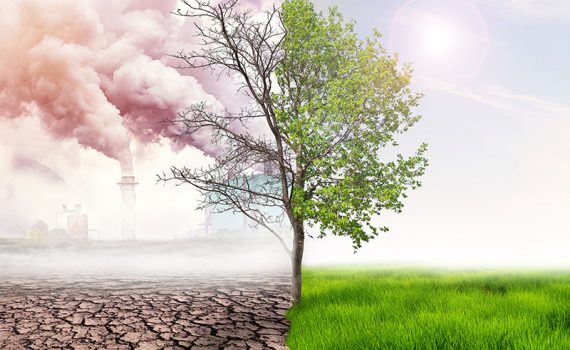
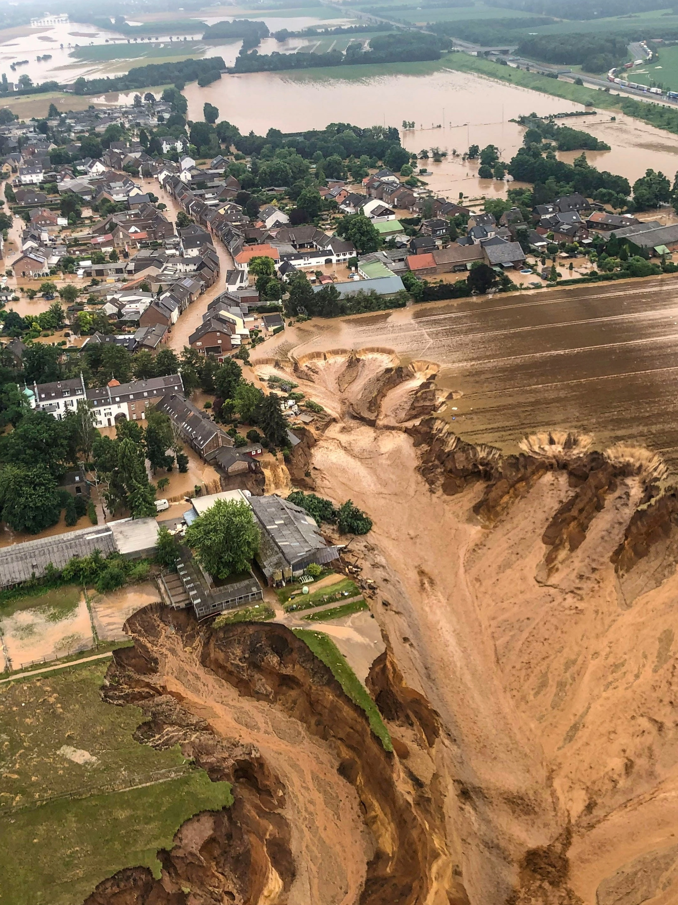

Sobre o nosso projeto
|
O termo "catástrofe climática" refere-se a eventos extremos que ocorrem como resultado das mudanças climáticas, que têm graves consequências para as sociedades e o meio ambiente. Furacões, inundações, secas extremas, incêndios florestais e ondas de calor são exemplos mais comuns. Esses fenômenos têm aumentado em frequência e intensidade com o aquecimento global, causando deslocamento de populações e danos à infraestrutura. As regiões que foram afetadas por essas catástrofes são frequentemente mais vulneráveis, especialmente em países com menos recursos para lidar com desastres naturais. |
 |
|
O aumento das emissões de gases de efeito estufa causadas pela atividade humana, como a queima de combustíveis fósseis e o desmatamento, está diretamente relacionado às mudanças climáticas. A conformidade com esses novos padrões climáticos e a mitigação de suas causas são essenciais para evitar danos permanentes. Governos e organizações em todo o mundo têm tentado adotar soluções, como a transição para fontes de energia renováveis, o reflorestamento e o desenvolvimento de infraestruturas mais resilientes. No entanto, para conter o avanço dessas calamidades naturais, é necessária uma ação global coordenada. |
|  | Tema |
| Fornecer uma compreensão abrangente das atuais catástrofes climáticas para a população, por meio de informações de fontes confiáveis, procurando esclarecer possíveis dúvidas de maneira clara e direta. | |
Delimitação |
|
| Auxiliar na informação da população sobre as catástrofes climáticas que estão afetando nossas vidas, conscientizá-los do porquê elas ocorrem e o que podem fazer para ajudar a detê-las. | |
Problema |
|
| A população perante as atuais catástrofes climáticas se vê perdida em meio ao vasto leque de fontes de informação, sem saber o que é certo e o que não é. |